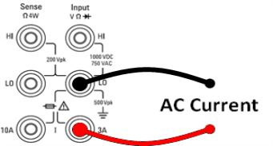
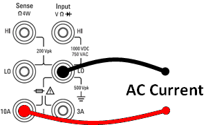
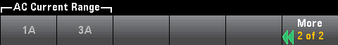

When making measurements using the 10A terminals, the presence of a signal on the 3A terminals can cause significant errors.
When making measurements using the 10A terminals, the presence of a signal on the 3A terminals can cause significant errors.This section describes how to configure AC current measurements from the front panel.
Step 1: Configure the test leads as shown.

On the 34461A/65A/70A, you can also configure the measurement using the 10 A terminal, which is recommended when measuring current above 1 A:

Step 2: Press [ACI] on the front panel.
Step 3 (34461A/65A/70A only): The 3A terminals are selected by default. The Terminals softkey toggles between the 3 A terminals and the 10 A input terminals. When you change this to 10 A, the measurement range automatically becomes 10 A.
When making measurements using the 10A terminals, the presence of a signal on the 3A terminals can cause significant errors.
Step 4: Press Range to select a range for the measurement. You can also use the [+], [-], and [Range] keys on the front panel to select the range. (Auto (autorange) automatically selects the range for the measurement based on the input. Autoranging is convenient, but it results in slower measurements than using a manual range. Autoranging goes up a range at 120% of the present range, and down a range below 10% of the present range. Press More to switch between the two pages of settings.

Step 5: Press AC Filter and choose the filter for the measurement. The instrument uses three different AC filters that enable you either to optimize low frequency accuracy or to achieve faster AC settling times following a change in input signal amplitude.
The three filters are 3 Hz, 20 Hz, and 200 Hz, and you should generally select the highest frequency filter whose frequency is less than that of the signal you are measuring, because higher frequency filters result in faster measurements. For example, when measuring a signal between 20 and 200 Hz, use the 20 Hz filter.
If measurement speed is not an issue, choosing a lower frequency filter may result in quieter measurements, depending on the signal that you are measuring.


|
For accurate displayed statistics of AC measurements in Front Panel mode, the default manual trigger delay ([Acquire] > Delay Man) must be used. |